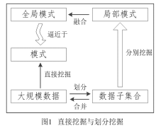
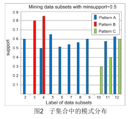

About author
前言
在指导硕士和博士研究生的 20 余年中，一直讲授我自己对为人与做学问的理解方法， 效果还不错。按照原计划，我打算通过出版社出版自己认为比较满意的这些论文，供潜心研 究的同行和应用开发者鉴享。联系后才发现，需要的时间很长。于是，我就有了在网站进行 交流和讨论的想法。
在我 30 多年的研究生涯中，前十年主要研究时态推理与不确定性推理，后二十多年研 究数据挖掘。考虑到版权的问题，这个精选论文集基本上是选择发表了十年或以上的论文。 的确，这肯定有过时的嫌疑。但是，我相信，论文中的思路和解决方法依然有一定的参考价 值。这是因为，近几年来发表大数据方面论文的国际同行对选于本论文集中的一些方法予以 肯定，鼓舞了我向读者推荐这组论文的信心
这组论文包括数据划分挖掘、数据挖掘、负关联规则挖掘、时态区间演算和不确定性推 理的矩阵计算，共 5 个方面的研究成果。为了忠实原文，直接采用论文发表时的 PDF 文件， 只是在每篇论文之前加一个简要解释。可以说，这是我现在对当时这些问题与成果的再理解 和认识。
这组论文适合高年级本科生、硕士、博士、科技工作者和系统开发人员，或者作为研究 生选读教材。读者可以整体下载学习，也可以选择性地下载学习，不一定要逐一阅读。最好 的办法是，根据读者对每一篇论文前面的注释的兴趣来确定是否需要阅读这一篇论文。
由于作者水平有限，各种错误难免。比如，这些论文的英文写作水平很一般，在一边研 究一边学习写作的过程中完成。另外，因为这些研究问题和方法一直被我思考至今，因此， 现在写那些简要解释的时候没有温习相应的论文，也就不能避免有所出入且带有个人偏好 性。所以，诚恳欢迎各位读者通过电话或者电子邮件批评指正。
仔细的读者应该已经发现，书名和内容不完全吻合，因为时态区间演算和不确定性推理 的矩阵计算不在数据挖掘的研究范畴。选择这两个内容的原因是：没有足够满意的相关成果 一起成为一本书，而我认为其研究方法值得推荐给数据挖掘学者。也有请数据挖掘方面的读 者帮我推荐给时态推理和不确定性推理学者的想法，我在这里先拜谢了！
在“大数据”这个名词出现前，通常使用“大规模数据”和“海量”等来形容数 据量的超级大。为了统一名称，本组论文的所有中文注释的描述采用了现在大家熟知 的“大数据”这个词，以下不再专门声明。
最初做数据挖掘研究时碰到的第一个难点当然就是数据量大，通常需要几天的时间才能拿到运行结果。所以，我的第一反应就是分而治之！于是，解决这个问题的关键就转变成：如何将划分挖掘的模式融合成能逼近直接挖掘的模式。通过对划分挖掘的模式的仔细分析和理解，我们发现了一种加权融合方法可以逼近直接挖掘的关联模式。它的核心点就是权重的确定：一个关联模式在越多的子集合被挖掘出来，这个关联模式的权值应该越大；一个子集合被挖掘出来的模式中含有权值大的关联模式越 多，这个子集合的权值应该越大。这个权重确定的方法得益于美国总统选举办法，每 个州的总统选举票数量决定了州的重要性。
请注意，上面提到的“对划分挖掘的模式的理解”是非常重要的,在传统数据挖掘中基本上没有对数据或者数据集合经过理解后再挖掘的算法，通常都是一些应用驱动的挖掘算法。这种理解在某种程度上是对数据集合的理解，导出了一个值得深入探 讨的结论：只有对大规模数据划分挖掘并剖析后，才能发现一些新的有用模式，揭示出这些模式的存在形态与内涵。图 1 同时展示了大规模数据的直接挖掘和划分挖掘的过程，后者可以逼近前者的挖掘结果。据我们所知，文献[1]从数学角度证明了这个结论。图 2 展示了划分后在各个数据子集合中发现的局部模式：A类（蓝色的）、B 类（红色的）和 C 类（绿色的）模式。A 类模式可以采用传统挖掘方法来获取，但是，B 和 C 两类 模式是传统算法不能发现的。也就是说，通过这种剖析，我们获得了这样一些 新的有趣信息： B 类模式可以用于发现历 史数据集合中那些曾经辉煌过的模式，对 考证和考古有帮助；C 类模式可以用于发 现趋势模式，对市场分析有用。这种理解 鼓励了我们展开多源数据（第二篇论文） 和动态数据（第三篇论文）挖掘的研究， 简单描述如下。
（1）在多源数据环境下，A、B 和 C 类模式来自于分别挖掘各个数据源，称为 局部模式，它们在局部决策和全局决策中都有重要的应用价值。然而，将数据源集成 挖掘的传统方法通常只能发现 A 类型模式中的一部分，因为 B 和 C 两类模式在数据集 成后无法识别出来。所以，我们在第二篇论文中提出了局部模式分析（Local Pattern Analysis，LPA）方法，通过基于 LPA 的加权挖掘方法来发现 A、B 和 C 三类模式。
（2）对于一个动态数据集合，我们在第三篇论文中提出了加权挖掘的方法来发现近似的 C 类模式。
参考文献
[1]. C. Xu, Y. Zhang, R. Li, et al. On the Feasibility of Distributed Kernel Regression for Big Data. IEEE Transactions on Knowledge and Data Engineering, 2016, 28(11): 3041-3052.
多源数据挖掘的加权融合方法是与第一篇论文的方法类似，但是，解决拥有多源数据的用户的多层次应用需求问题具有更大的挑战性。
1998 年兴起的多源数据挖掘致力于关联模式发现的方法和技术，符合最初以研究 不同类型数据集合中的关联模式挖掘方法为主要目标的数据挖掘领域发展需求。不 过，这种多源数据挖掘必须要解决：处理来自多源的数据要面对数据集成所带来的巨 大挑战，数据集成导致一些有用模式的消亡，集团公司的多层次挖掘需求，原始数据 的私有性保护等问题。这是极为困难的又无法绕开的艰巨任务。针对这个发现，这一 篇论文提出了局部模式分析方法，避免了多源的原始数据直接参与运算，实现挖掘复 杂性的控制，发现新的全局有用模式，保护原始数据的私有性利益。
基于局部模式分析的多源数据挖掘的具体模式融合过程如下：在任何节点（公司 或者子公司）进行模式挖掘，首先将其子节点（如果有）的局部模式作为融合算法的 输入，然后，加上从本节点（如果有）的数据中挖掘出的一些模式作为融合算法的输 入，最后，通过融合算法有效地综合各种局部模式后产生的模式就是这一层次节点需 求的全局模式。这种局部模式分析方法与人类对多源数据的智能处理机制相吻合，可 以同时支持全局和局部决策应用，形成了多源多层次模式发现的新机制。与数据集成 挖掘方法相比，局部模式分析方法更易于理解与实现，从根本上改变了候选运算数 据，减少了存储和计算量，实现了存储和计算难度的控制，保护了原始数据的私有性 利益。特别是，局部模式分析能够控制子节点中数据的异质与异构性的传播，完成多 源数据挖掘的主体任务。
另外，这一章设计了基于局部模式分析的多源数据中高票模式融合挖掘算法，可 以通过调整权重值来扩展该算法，以便发现局部突出模式、例外模式、或者趋势模式 （图 2 中的 A、B 和 C 三类模式的具体表现），解决了数据集成后导致这些有用模式 消亡的问题。的确，数据集成会导致一些有用模式消亡，下面一个类似的例子可以形 象地说明这一点。例如，设 X 和 Y 是争夺网球比赛决赛（3 局 2 胜制）的两名选手， 且三局的比分分别是 6：4；0：6；6：4。按照比赛规则，X选手取得2：1的胜利 （图 2 中的 A 类模式），是冠军。若将这三局比分看成三个数据库的数据，按照数据 集成挖掘方法，这三个库中的数据被集成后挖掘到的结果是：Y选手取得14 ：12的胜 利，应该获得冠军，但这与赛制规定相左。这是因为将三个库中的数据集成在一起后 就不能体现出 2：1 这个三局两胜的局部模式的分布信息，即，数据集成会导致了这 类重要信息的消亡。
另外，图 2 中 B 和 C 两类模式通常在数据集成后统计出的支持度很低，也是无法 识别出来的。在实际应用中，上面这些隐藏在各个数据源的局部模式是集团公司及其 子公司进行决策的最有用的全局信息之一，可以通过扩展这篇论文中的挖掘算法来发 现它们，有兴趣的读者可以下载阅读文献[2-4]。
参考文献
[2]. Xindong Wu, Chengqi Zhang and Shichao Zhang. Database Classification for Multi- Database Mining. Information Systems, 30(2005): 71-88.
[3]. Shichao Zhang, Chengqi Zhang and Jeffrey Xu Yu. An Efficient Strategy for Mining Exceptions in Multi-databases. Information Sciences, 165/1-2 (2004): 1-20.
[4]. Chengqi Zhang, Meiling Liu, Wenlong Nie and Shichao Zhang. Identifying Global Exceptional Patterns in Multi-database Mining. IEEE Computational Intelligence Bulletin, Vol. 3 1(2004): 19-24.
动态是多源数据的重要特征之一，其挖掘结果对实时监测与跟踪、行为预测、模 式维护等应用具有重大的实际意义。在传统的动态数据挖掘都是针对数据增加的，但 实际应用中数据更新包括了数据增加、删除和修改三类操作。在这一篇论文中，针对 增量式动态数据，我们建立了新的竞争机制、权值的自动产生和误差分析。与传统的 增量更新算法相比，我们的增量式维护算法是基于加权技术的。通过加权，一些新 的、有趋向性的模式能快速脱颖而出，这种模式揭示了市场变化方面的信息，在市场 预测等应用中极为有用，但是，传统的数据增加式动态数据挖掘算法不能发现这类模 式。
其实，在参考文献中列出了论文[5，6]，方便于感兴趣的读者下载阅读我们的减 量式挖掘的模型和方法。这样，通过增量和减量挖掘的有机组合，可以形成数据动态 变化的挖掘维护方法。这是实际意义上的一个完备的更新挖掘体系，填补了同时支持 增加、删除和修改三类数据更新操作的动态数据挖掘理论与技术的空白。
参考文献
[5]. Shichao Zhang, Jilian Zhang, Chengqi Zhang. EDUA: An Efficient Algorithm for Dynamic Database Mining. Information Sciences, 177(13): 2756-2767 (2007).
[6]. Shichao Zhang, Jilian Zhang, Zhi Jin. A decremental algorithm of frequent itemset maintenance for mining updated databases. Expert Systems with Applications, 36 8(2009): 10890-10895.
自 Agrawal 等在 1993 年提出关联模式挖掘[7]，到 1998 年我开始数据挖掘研究 时，这方面的研究成果相当多。读了一些主要论文后，感觉大家基本上是在做 Apriori 算法的改良。除了第一篇论文中想到的划分挖掘方法外，我没有设计出更有意义的频 繁模式挖掘算法。经过对实际应用需求和数据的理解，我们发现：传统的关联规则能 抓住频繁项集合中相伴性的相互关系，尽管广泛存在且切实有效，但它反映的只是潜 在数据项的同现，有着明显的不足。
在现实世界中，完整的关联性应该是双重的，包括同时发生（关联规则）和排斥 发生（负关联规则，它表示在某一事务中某些项集合的存在意味着另一些项集合的不 存在）这两类关联。互斥性关联模式通常是隐藏在非频繁项集合中的，因此，必须提 供一种全新角度的数据相关性分析方法。另一方面，注意到很多现有的数据挖掘算 法，比如分类和聚类都可以使用互斥关联分析，所以，互斥性关联方面的成就肯定会 对数据挖掘领域带来深远影响。针对以上发现，我们主张充分利用非频繁项集（非频 繁模式），从非频繁项集合中挖掘潜在有用的模式：负关联规则，它刻画了项集合中 互斥性这一相互关系。与频繁项集合相比，挖掘有用的非频繁项集合更具有挑战性， 因为它必须面对一个完全的巨大搜索空间，用于频繁模式的剪枝技术在非频繁项集合 挖掘中是无效的。因此，在这一篇论文中我们提出用于挖掘负关联规则的非频繁项集 合表示与操作方法、测度理论、挖掘算法、剪枝技术、和评估方法。非频繁模式和频 繁模式在实际应用中具有很强的互补性，它们一起形成了数据关联的完整体系，使得 一些有意义的非频繁模式能在决策等应用中充分发挥作用。
文献[8]是这一篇论文的会议版本，仅供感兴趣的读者下载阅读。
参考文献
[7]. R. Agrawal, T. Imielinski, A. Swami. Mining association rules between sets of items in massive databases. In Proceedings of the 1993 ACM SIGMOD International Conference on Management of Data, ACM, Washington D.C., 1993: 207–216.
[8]. Xindong Wu, Chengqi Zhang and Shichao Zhang. Mining Both Positive and Negative Association Rules. In: Proceedings of 19th International Conference on Machine Learning (ICML), Sydney, Australia, 2002: 658-665.
区间时态推理实际上是一个匹配过程，复杂性很高。通过理解时间区间之间的关 系及其演算，我们发现是可以通过矩阵计算来实现。于是，这一篇论文提出了区间关 系矩阵，以及演算和判断的方法。这个方法尽管跟算法六的矩阵计算有一些不同，但 思想的确是来源于算法六。
文献[9]是算法五的区间演算方法的扩展与深入探讨，仅供感兴趣的读者下载阅读。
参考文献
[9]. Shichao Zhang and Chengqi Zhang. Propagating Temporal Relations of Intervals by Matrix. Applied Artificial Intelligence, Vol. 16, 1(2002): 1-27.
在这一篇论文完成之前，我们在不确定性推理方面做了近 10年的研究。然而， 取得的成果一直不满意。所以，我们对不确定性推理的过程展开了分析和再理解，产 生了采用矩阵表示规则的可信度的思想。经过反复研究，又定义了这种矩阵的演算和 判断方法。实验表明，这种矩阵表示、演算和判断可以很好地实现不确定性推理的匹 配过程。我们对这个结果感到满意，就选择出来供读者鉴享。
重要期刊论文
1. Xiaofeng Zhu, Xuelong Li, Lianli Gao, Shichao Zhang, Zongben Xu, Litao Yu, and Can Wang. Graph PCA Hashing for similarity search. IEEE Transactions on Multimedia, Accepted in 27 Apr, 2017.
2. Faliang Huang, Xuelong Li, Shichao Zhang*, Jilian Zhang. Overlapping Community Detection for Multimedia Social Networks. IEEE Transactions on Multimedia, Accepted in 14 Feb, 2017.
3. Faliang Huang, Xuelong Li, Shichao Zhang*, Jilian Zhang. Harmonious Genetic Clustering. IEEE Transactions on Cybernetics, Accepted in 01 Nov, 2016.
4. Shichao Zhang, Xuelong Li, Ming Zong, Xiaofeng Zhu*, Ruili Wang. Efficient kNN Classification with Different Numbers of Nearest Neighbors. IEEE Transactions on Neural Networks and Learning Systems, Accepted in 27 Sep. 2016.
5. Xiaofeng Zhu, Xuelong Li, Shichao Zhang*, Chunhua Ju, Xindong Wu. Robust Joint Graph Sparse Coding for Unsupervised Spectral Feature Selection. IEEE Transactions on Neural Networks and Learning Systems, Accepted in 23 Jan. 2016.
6. Shichao Zhang*, Xuelong Li, Ming Zong, Xiaofeng Zhu, and Debo Cheng. Learning k for kNN Classification. ACM Transactions on Intelligent Systems and Technology, Vol 8(3) 43:1-19 (2017).
7. Huawen Liu, Xuelong Li, Shichao Zhang*. Learning Instance Correlation Functions for Multi-label Classification. IEEE Transactions on Cybernetics, 47(2): 499-510 (2017).
8. Zhenjun Tang, Xianquan Zhang, Xianxian Li, Shichao Zhang*. Robust Image Hashing with Ring Partition and Invariant Vector Distance. IEEE Transactions on Information Forensics & Security, 11(1): 200-214 (2016).
9. Xiaofeng Zhu, Xuelong Li, Shichao Zhang*. Block-Row Sparse Multiview Multilabel Learning for Image Classification. IEEE Transactions on Cybernetics, 46(2): 450-461 (2016).
10. Zhenjun Tang, Xianquan Zhang, Shichao Zhang*. Robust perceptual image hashing based on ring partition and NMF. IEEE Transactions on Knowledge and Data Engineering, 26(3): 711-724 (2014).
11. Xiaofeng Zhu, Shichao Zhang*, Zhi Jin, Zili Zhang, Zuoming Xu. Missing Value Estimation for Mixed-Attribute Datasets. IEEE Transactions on Knowledge and Data Engineering, 23(1): 110-121 (2011).
12. Shichao Zhang. Detecting Differences between Contrast Groups. IEEE Transactions on Information Technology in Biomedicine, Vol 12(6), Nov, 2008: 739-745.
13. Shichao Zhang, Zhenxing Qin and Charles Ling. "Missing is Useful": Missing Values in Cost-sensitive Decision Trees. IEEE Transactions on Knowledge and Data Engineering, Vol. 17 No. 12 (2005): 1689-1693.
14. Yanchang Zhao and Shichao Zhang*. Generalized Dimension-Reduction Framework for Recent-Biased Time Series Analysis. IEEE Transactions on Knowledge and Data Engineering, Vol. 18(2), Feb. 2006: 231-244.
15. Xindong Wu, Chengqi Zhang and Shichao Zhang. Efficient Mining of Both Positive and Negative Association Rules. ACM Transactions on Information Systems， 22(2004), 3: 381-405.
16. Xindong Wu and Shichao Zhang*. Synthesizing High-Frequency Rules from Different Data Sources. IEEE Transactions on Knowledge and Data Engineering, 15(2003): 353-367.
17. Shichao Zhang and Chengqi Zhang. Encoding the Propagation in Belief Networks. IEEE Transactions on Systems, Man and Cybernetics (Part A), Vol. 32 No. 4(2002): 526-531.
18. Shichao Zhang and Chengqi Zhang. Anytime Mining for Multi-User Applications. IEEE Transactions on Systems, Man and Cybernetics (Part A), Vol. 32 No. 4(2002): 515-521.
19. Huawen Liu, Zongjie Ma, Shichao Zhang, Xindong Wu. Penalized Partial Least Square Discriminant Analysis with l1-norm for Multi-label Data. Pattern Recognition, 48(5): 1724–1733, 2015.
20. Alan Tao Wang, Zhenxing Qin, Shichao Zhang*, Chengqi Zhang. Cost-sensitive classification with inadequate labeled data. Information Systems, 37(5): 508–516 (2012).
21. Xindong Wu, Chengqi Zhang and Shichao Zhang*. Database Classification for Multi-Database Mining. Information Systems, 30(2005): 71-88.
22. Shichao Zhang and Chengqi Zhang. PostMining: maintenance of association rules by weighting. Information Systems, Vol 28(7), Oct. 2003: 691-707.
23. Shichao Zhang and Mohammed J. Zaki. Mining Multiple Data Sources: Local Pattern Analysis. Data Mining and Knowledge Discovery, 12(2-3): 121-125 (2006).
24. Kaile Su, Huijing Huang, Xindong Wu and Shichao Zhang*. A logical framework for identifying quality knowledge from different data sources. Decision Support Systems, Vol 42/3, pp 1673-1683 (2006).
25. Shichao Zhang, Qingfeng Chen, Qiang Yang. Acquiring Knowledge from Inconsistent Data Sources Through Weighting. Data & Knowledge Engineering, 69 (2010): 779–799.
26. Shichao Zhang, Zhi Jin, Jingli Lu. Summary Queries for Frequent Itemsets Mining. Journal of Systems & Software, 83 (2010), pp. 405-411.
27. Tao Wang, Zhenxing Qin, Zhi Jin and Shichao Zhang*. Handling Over-fitting in Test Cost-sensitive Decision Tree Learning by Feature Selection, Smoothing and Pruning. Journal of Systems and Software, 83 (2010), pp 1137–1147.
28. Shichao Zhang, Zhi Jin, Xiaofeng Zhu. Missing Data Imputation by Utilizing Information within Incomplete Instances. Journal of Systems and Software, 84 (2011), pp 452–459.
29. Yanchang Zhao, Jie Cao, Chengqi Zhang, Shichao Zhang. Enhancing Grid-Density Based Clustering for High Dimensional Data. Journal of Systems and Software, 84 (2011): 1524–1539.
30. Shichao Zhang. Decision Tree Classifiers Sensitive to Heterogeneous Costs. Journal of Systems and Software, Volume 85, Issue 4, April 2012, Pages 771–779.
31. Huawen Liu, Shichao Zhang*. Noisy Data Elimination Using Mutual k-Nearest Neighbor for Classification Mining. Journal of Systems and Software, 85 (2012), pp. 1067-1074.
32. Shichao Zhang. Nearest Neighbor Selection for Iteratively kNN Imputation. Journal of Systems and Software, 85(11): 2541-2552 (2012).
33. Huawen Liu, Xindong Wu, Shichao Zhang*. A New Supervised Feature Selection Method For Pattern Classification. Computational Intelligence, 30(2): 342-361 (2014).
IEEE杂志论文
34. Xindong Wu, Huanhuan Chen, Gong-Qing Wu, Jun Liu, Qinghua Zheng, Xiaofeng He, Aoying Zhou, Zhong-Qiu Zhao, Bifan Wei, Ming Gao, Yang Li, Qiping Zhang, Shichao Zhang, Ruqian Lu, Nanning Zheng. Knowledge engineering with big data. IEEE Intelligent Systems, September/October 2015: 1-11, 30(5): 46-55.
35. Shichao Zhang. KNN-CF Approach: Incorporating Certainty Factor to kNN Classification. IEEE Intelligent Informatics Bulletin, 11(1), 2010: 25-34.
36. Shichao Zhang. Parimputation: From imputation and null-imputation to partially imputation. IEEE Intelligent Informatics Bulletin, Vol 9(1), 2008: 32-38.
37. Jeffrey Xu Yu, Yuming Ou, Chengqi Zhang and Shichao Zhang*, Customer Retention: Identifying Actionable Information from Web-Logs. IEEE Intelligent Systems, May/June 2005: 55-59.
38. Kai-Yuan Cai, Yunfei Yin, and Shichao Zhang. A Partial-Repeatability Approach to Data Mining. IEEE Intelligent Informatics Bulletin, 5(1): 26-34 (2005).
39. Shichao Zhang, Chengqi Zhang and Qiang Yang. Information Enhancement for Data Mining. IEEE Intelligent Systems, March/April 2004: 12-13.
40. Chengqi Zhang, Meiling Liu, Wenlong Nie and Shichao Zhang*. Identifying Global Exceptional Patterns in Multi-database Mining. IEEE Computational Intelligence Bulletin, Vol. 3 1(2004): 19-24.
41. Shichao Zhang, Xindong Wu and Chengqi Zhang. Multi-Database Mining. IEEE Computational Intelligence Bulletin, Vol. 2, No. 1, June 2003: 5-13.
其它国际期刊论文
42. Shichao Zhang, Lifeng Yang, Zhenyun Deng, Debo Cheng, Yonggang Li. Leverage Triple Relational Structures via Low-rank Feature Reduction for Multi-output Regression. Multimedia Tools and Applications, Accepted in Sep., 2016.
43. Zhenyun Deng, Shichao Zhang*, Lifeng Yang, Ming Zong, Debo Cheng. Sparse Sample Self-representation for Subspace Clustering. Neural Computing and Applications, Accepted in Feb., 2016.
44. Shichao Zhang, Yonggang Li, Debo Cheng. Efficient subspace clustering based on self-representation and grouping effect. Neural Computing and Applications, Accepted in Feb., 2016.
45. Debo Cheng, Shichao Zhang*, Xingyi Liu, Ke Sun, Ming Zong. Feature selection by combining subspace learning with sparse representation. Multimedia Systems, accepted in Aug 2015. DOI 10.1007/s00530-015-0487-0
46. Rongyao Hu, Xiaofeng Zhu, Debo Cheng, Wei He, Yan Yan, Jingkuan Song, Shichao Zhang. Graph self-representation method for unsupervised feature selection. Neurocomputing, 220: 130-137 (2017).
47. Wei He, Xiaofeng Zhu, Debo Cheng, Rongyao Hu, Shichao Zhang: Unsupervised feature selection for visual classification via feature-representation property. Neurocomputing, 236: 5-13 (2017).
48. Shichao Zhang, Debo Cheng, Ming Zong, Lianli Gao. Self-representation Nearest Neighbor Search for Classification. Neurocomputing, 195: 137-142 (2016).
49. Zhenyun Deng, Xiaoshu Zhu, Debo Cheng, Ming Zong, Shichao Zhang. Efficient kNN Classification Algorithm for big data. Neurocomputing, 195: 143-148 (2016).
50. Huawen Liu, Xindong Wu, Shichao Zhang*: Neighbor Selection for Multilabel Classification. Neurocomputing, 182: 187-196 (2016).
51. Xiaofeng Zhu, Qing Xie, Yonghua Zhu, Xingyi Liu, Shichao Zhang*: Multi-view multi-sparsity kernel reconstruction for multi-class image classification. Neurocomputing, 169: 43-49 (2015).
52. Huawen Liu, Shichao Zhang*, Xindong Wu. MLSLR: Multilabel Learning via Sparse Logistic Regression. Information Sciences, 281: 310-320 (2014).
53. Faliang Huang, Shichao Zhang*, and Xindong Wu. Clustering Web Documents Using Hierarchical Representation with Multi-granularity. World Wide Web Journal, 17(1): 105-126 (2014).
54. Shichao Zhang and Jilian Zhang. Classifying Incomplete Data Using Group Difference Detection with Parimputation Approach. International Journal of Software and Informatics, Vol 6(4): 535-552 (2012).
55. Shichao Zhang, Feng Chen, Xindong Wu, Chengqi Zhang, Ruilin Wang. Mining Bridging Rules Between Conceptual Clusters. Applied Intelligence, 36(1): 108-118 (2012).
56. Shichao Zhang and Xindong Wu. Fundamental Role of Association Rules in Data Mining and Knowledge Discovery. WIREs Data Mining & Knowledge Discovery, 1(2): 97-116 (2011). (Invited paper)
57. Shichao Zhang. Information Enhancement for Data Mining. WIREs Data Mining & Knowledge Discovery, Volume 1, July /August 2011, pp 284-295. (Invited paper)
58. Shichao Zhang. Shell-Neighbor Method And Its Application in Missing Data Imputation. Applied Intelligence, Volume 35, Issue 1 (2011), Page 123-133.
59. Qingfeng Chen, Shichao Zhang, Zhi Zhong: Dealing with inconsistent secure messages by weighting majority. Knowledge-Based Systems, 24(6): 731-739 (2011).
60. Shichao Zhang. Cost-Sensitive Classification With Respect To Waiting Cost. Knowledge-Based Systems, 23 (2010): 369–378.
61. Yongsong Qin, Shichao Zhang*, Chengqi Zhang. Combining kNN Imputation and Bootstrap Calibrated: Empirical Likelihood for Incomplete Data Analysis. International Journal of Data Warehousing and Mining (DWM), 6(4): 61-73 (2010).
62. Shichao Zhang. Estimating Semiparametric Missing Values with Iterative Imputation. International Journal of Data Warehousing and Mining (DWM), 6(3), 2010, pp 1-10.
63. Shichao Zhang, Rifeng Wang, Zhi Jin: Strategies for Complex Data Cube Queries. Applied Intelligence, Vol 31(3): 332-346 (2009).
64. Xiaowei Yan, Chengqi Zhang, Shichao Zhang*: Confidence Metrics for Association Rule Mining. Applied Artificial Intelligence, 23(8): 713 – 737 (2009).
65. Shichao Zhang, Jilian Zhang, Zhi Jin. A decremental algorithm of frequent itemset maintenance for mining updated databases. Expert Systems with Applications, Vol 36(8): 10890-10895 (2009).
66. Shichao Zhang, Xiaofang You, Zhi Jin, Xindong Wu. Mining Globally Interesting Patterns from Multiple Databases Using Kernel Estimation. Expert Systems With Applications, Vol 36(8): 10863-10869 (2009).
67. Shichao Zhang, Zhi Jin, Xiaofeng Zhu, Jilian Zhang: Missing Data Analysis: A Kernel-Based Multi-imputation Approach. Transactions on Computational Science, III, LNCS 5300, pp. 122–142, 2009.
68. Yongsong Qin, Shichao Zhang*, Xiaofeng Zhu, Jilian Zhang, Chengqi Zhang. Estimating Confidence Intervals for Structural Differences between Contrast Groups with Missing Data. Expert Systems With Applications, 36: 6431-6438 (2009).
69. Shichao Zhang, Feng Chen, Zhi Jin, Ruili Wang. Mining Class-bridge Rules Based on Rough Sets. Expert Systems With Applications, 36: 6453-6460 (2009).
70. Yongsong Qin, Shichao Zhang*, Xiaofeng Zhu, Jilian Zhang, Chengqi Zhang: POP Algorithm: Kernel-Based Imputation to Treat Missing Values in Knowledge Discovery from Databases. Expert Systems With Applications, 36: 2794-2804 (2009).
71. Xiaowei Yan, Chengqi Zhang, Shichao Zhang*: Genetic-algorithm-based Strategy for Identifying Association Rules without Specifying Actual Minimum-support. Expert Systems With Applications, 36: 3066-3076 (2009).
72. Huang QR; Zhenxing Qin; Shichao Zhang; Chow CM. Clinical patterns of obstructive sleep apnea and its comorbid conditions: a data mining approach. Journal of Clinical Sleep Medicine, 2008; 4(6): 543–550.
73. Qingfeng Chen, Shichao Zhang, and Phoebe Chen. Rule-based Dependency Models for Security Protocol Analysis. Integrated Computer-Aided Engineering, Vol 15 (4): 369-380 (2008).
74. Shichao Zhang, Yongsong Qin, Jilian Zhang, Xiaofeng Zhu, Chengqi Zhang. Missing Value Imputation Based on Data Clustering. Transactions on Computational Science Journal, LNCS 4750, pp 128-138, 2008.
75. Shichao Zhang, Xindong Wu, Chengqi Zhang, and Jingli Lu. Computing the Minimum-Support for Mining Frequent Patterns. Knowledge and Information Systems, 15: 233-257 (2008).
76. Shichao Zhang, Zifang Huang, Jilian Zhang, Xiaofeng Zhu. Mining Follow-up Correlation Patterns from Time-related Databases, Knowledge and Information Systems, 14(1): 81-100 (2008).
77. Yongsong Qin, Shichao Zhang*. Empirical Likelihood Confidence Intervals for Differences between Two Datasets with Missing Data. Pattern Recognition Letters, Volume 29, Issue 6, 15 April 2008, Pages 803-812.
78. Yongsong Qin, Shichao Zhang*, Xiaofeng Zhu, Jilian Zhang, Chengqi Zhang: Semi-parametric Optimization for Missing Data Imputation. Applied Intelligence, 27(1): 79-88 (2007).
79. Xiaowei Yan, Chengqi Zhang and Shichao Zhang*. On Data Structures for Association Rule Discovery. Applied Artificial Intelligence. Vol 21（2）, 2007: 57-79.
80. Shichao Zhang, Jilian Zhang, Chengqi Zhang: EDUA: An Efficient Algorithm for Dynamic Database Mining. Information Sciences, 177(13): 2756-2767 (2007).
81. Xingquan Zhu, Taghi M. Khoshgoftaar, Ian Davidson. Shichao Zhang: Editorial: Special issue on mining low-quality data. Knowledge and Information Systems, 11(2): 131-136 (2007).
82. Xiaowei Yan, Chengqi Zhang and Shichao Zhang*. ARMGA: Identifying interesting association rules with genetic algorithms. Applied Artificial Intelligence, Vol 19, No 7(2005): 677 - 689.
83. Qingfeng Chen, Chengqi Zhang and Shichao Zhang. ENDL: A Logical Framework for Verifying Secure Transaction Protocols. Knowledge and Information Systems, 7(2005), 1: 84-109.
84. Shichao Zhang, Jingli Lu and Chengqi Zhang. A fuzzy logic based method to acquire user threshold of minimum-support for mining association rules. Information Sciences, Volume 164, Issues 1-4, 2 August 2004, Pages 1-16.
85. Shichao Zhang, Chengqi Zhang and Jeffrey Xu Yu. An Efficient Strategy for Mining Exceptions in Multi-databases. Information Sciences, Vol 165/1-2 (2004) pp 1-20.
86. Shichao Zhang, Chengqi Zhang and Jeffrey Xu Yu. Mining Dependent Patterns in Probabilistic Databases. Cybernetics and Systems, 35(4) (2004): 399-424.
87. Xiaowei Yan, Chengqi Zhang and Shichao Zhang. Identifying Software Component Association with Genetic Algorithm. International Journal of Software Engineering and Knowledge Engineering, Vol. 14, No. 4 (2004): 441-447.
88. Chengqi Zhang, Shichao Zhang* and Zili Zhang. Temporal Constraint Satisfaction in Matrix Method. Applied Artificial Intelligence, Vol. 17, 2(2003): 135-154.
89. Chengqi Zhang, Shichao Zhang* and Geoffrey Webb, Identifying Approximate Itemsets of Interest in Large databases. Applied Intelligence, 18(2003): 91-104.
90. Shichao Zhang, Chengqi Zhang and Qiang Yang, Data Preparation for Data Mining. Applied Artificial Intelligence, Vol. 17, 5-6(2003): 375-382.
91. Yuefeng Li, Chengqi Zhang, Shichao Zhang: Cooperative Strategy for Web Data Mining and Cleaning. Applied Artificial Intelligence 17(5-6): 443-460 (2003)
92. Xiaowei Yan, Chengqi Zhang, Shichao Zhang: Toward Databases Mining: Pre-Processing Collected Data. Applied Artificial Intelligence 17(5-6): 545-561 (2003)
93. Zili Zhang, Chengqi Zhang, Shichao Zhang: An Agent-Based Hybrid Framework for Database Mining. Applied Artificial Intelligence 17(5-6): 383-398 (2003)
94. Shichao Zhang and Chengqi Zhang. Discovering Causality in Large Databases, Applied Artificial Intelligence, Vol. 16, 5(2002): 333-358.
95. Shichao Zhang and Chengqi Zhang. Propagating Temporal Relations of Intervals by Matrix. Applied Artificial Intelligence, Vol. 16, 1(2002): 1-27.
96. Shichao Zhang and Xindong Wu. Large Scale Data Mining Based on Data Partitioning. Applied Artificial Intelligence, Taylor & Francis. Vol. 15 2(2001): 129-139.
97. Shichao Zhang. A Temporal Logic for Supporting Historical Database. Knowledge and Information Systems, 2(2000): 97-114.
98. Shichao Zhang. A nearest neighborhood algebra for probabilistic databases. Intelligent Data Analysis, Vol. 4(1) 2000.
99. Shichao Zhang and Chengqi Zhang. IMC: A Method for Interval Calculus in Matrix. Knowledge and Information Systems, 1(2) (1999): 257-268.
重要国际会议论文
100. Xiaofeng Zhu, Wei He, Yonggang Li, Yang Yang, Shichao Zhang, Rongyao Hu, Yonghua Zhu. One-step Spectral Clustering via Dynamically Learning Affinity Matrix and Subspace. Proceedings of 31st National Conference on Artificial Intelligence (AAAI-17), Vancouver, USA, July 22–26, 2017: 2963-2969.
101. Shichao Zhang, Feng Chen, Xindong Wu and Chengqi Zhang, Identifying Bridging Rules Between Conceptual Clusters. Proceedings of The Twelfth ACM SIGKDD International Conference on Knowledge Discovery and Data Mining, Philadelphia, USA, August 20-23, 2006: 815-820.
102. Shichao Zhang, Jilian Zhang and Xiaofeng Zhu, Identifying Follow-Correlation Itemset-Pairs. Proceedings of IEEE International Conference on Data Mining, Hongkong, 2006: 765-774.
103. Shengli Sheng, Charles X. Ling, Ailing Ni, and Shichao Zhang. Cost-Sensitive Test Strategies. Proceedings of 21st National Conference on Artificial Intelligence (AAAI-06), Boston, Massachusetts, USA, July 16 - 20, 2006: 482-487.
104. Charles Ling, Qiang Yang, Jianning Wang and Shichao Zhang, Decision Trees with Minimal Costs. In: Proceedings of 21st International Conference on Machine Learning(ICML)，Banff, Alberta, Canada , July 4-8, 2004.
105. Xindong Wu, Chengqi Zhang and Shichao Zhang, Mining Both Positive and Negative Association Rules. In: Proceedings of 19th International Conference on Machine Learning (ICML), Sydney, Australia, 2002: 658-665.
学术专著
1. Chengqi Zhang and Shichao Zhang*, Association Rules Mining: Models and Algorithms. Springer-Verlag Publishers in Lecture Notes on Computer Science, Volume 2307, p. 243, 2002.
2. Shichao Zhang, Chengqi Zhang and Xindong Wu, Knowledge Discovery in Multiple Databases. Springer, p. 233, ISBN: 1-85233-703-6, June 2004.
3. Qingfeng Chen, Chengqi Zhang, Shichao Zhang, Innovations in Secure Transaction Protocol Analysis, Springer, Volume 5111, p. 250, 2008.
博士学位论文
4. Shichao Zhang. Knowledge discovery in multi-databases by analyzing local instances. Deakin University, PhD Thesis, Oct 2001.